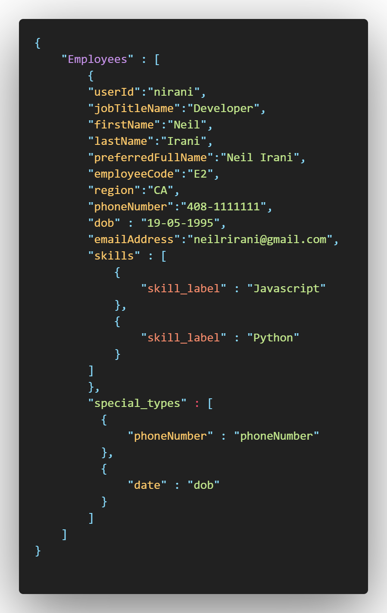
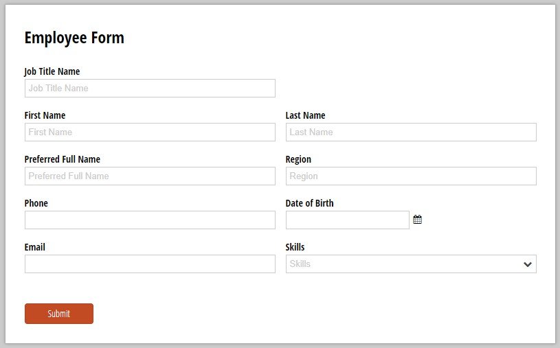
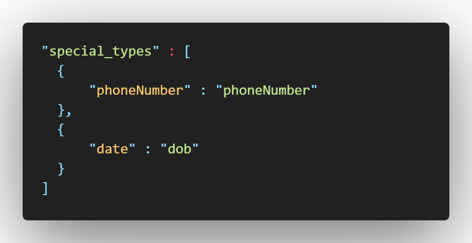
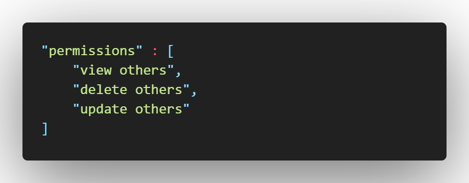

Project Walkthrough
In this section, I’ll be going through an example use case of the project. I will be explaining the system from the point of view that it’s is fully developed. This walkthrough is just my interpretation of how to project should work and will help you visualize your end goal.
JSON Objects Parsing into the System
The application would parse each JSON Object, obtaining each key respective field, it would also be recognizing if there is nest objects or arrays inside. These JSON objects would be in a specific folder called “entities”. Once each file inside is parsed, those objects would be added to the database if need be. For example, the employee called “Neil Irani” would be added to MongoDB.
Creating Forms from JSON
Then the system would make the corresponding forms to create instances of the JSONs in the “entities” object. For example in the “employee json”, it would create a form like below. It will take the Key and allow for the Value to be changed, all taken from the entities folder. Once a form is completed, the object would then be added to the database.
As you can see above, is a mock-up form of would look like. It has taken the main fields of the “Employee” object and made the corresponding fields. In theory, the system would recognise that some fields are generated by the system itself and don’t need user input like a “userid”. This could be done through declaring inside the JSON which fields need to be hidden.
Declaring of Specific Data Types
In each JSON entity, you could state specific data types for the fields. For example, the “DOB” key, the JSON would declare that as a date. A react date picker would then be rendered instead of input field. This could apply to phone numbers, times, etc. Adding their own validation. The Form above shows a great example of this with the fields “Skill” and “Date of Birth” have specialised inputs which adds validation. The code snippet below, just shows an example on how you could declare these data types.
Specifc Views
A manager JSON entity may have been defined. This would have special permissions over the “Employee” entity. For example, delete existing Employee entities or edit information their information. While an “Employee” entity may only be able to edit or delete their own data. This could be further explored with only certain functions of the system available like, settings tasks or seeing specific documents. The code below is a concept of what structure you could declare in the JSON object.
Future Development
To further develop the project afterwards, the code would be able to handle more data types that are declared in the JSON, to help fully fledge out the form. This would reduce the amount further development the end user has to do, to the code.